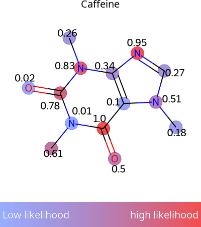
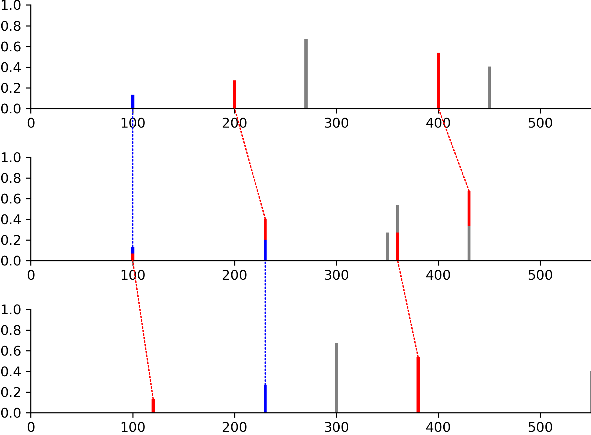
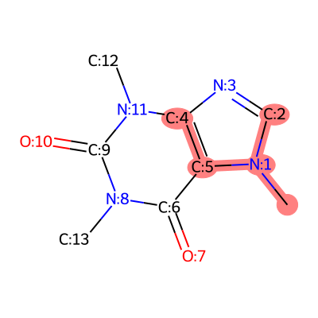

Visualization and Drawing
Visualization and Drawing
ModiFinder includes powerful visualization tools built on RDKit and matplotlib for creating publication-quality figures.
Note
Complete API documentation with all examples and images: See the Visualizer API Reference for detailed examples with visual outputs.
Overview
The modifinder.utilities.visualizer module provides:
draw_molecule()- Draw molecular structures (from SMILES, InChI, USI, or RDKit mol)draw_spectrum()- Draw mass spectra with custom colorsdraw_modifications()- Compare two structures and highlight differencesdraw_alignment()- Align and compare multiple spectradraw_molecule_heatmap()- Visualize atom-level probabilitiesdraw_frag_of_molecule()- Highlight molecular fragments
Quick Examples
Drawing a Molecule
Draw from SMILES, InChI, GNPS identifiers, or RDKit molecules:
from modifinder.utilities import visualizer as viz
import matplotlib.pyplot as plt
# Simple molecule
img = viz.draw_molecule('CN1C=NC2=C1C(=O)N(C(=O)N2C)C', label="Caffeine")
plt.imshow(img)
plt.axis('off')
plt.show()
With atom highlighting:
from rdkit import Chem
mol = Chem.MolFromSmiles('CN1C=NC2=C1C(=O)N(C(=O)N2C)C')
# Add atom indices for visualization
for atom in mol.GetAtoms():
atom.SetAtomMapNum(atom.GetIdx())
img = viz.draw_molecule(mol, highlightAtoms={1, 3, 11, 8}, label="Caffeine")

See draw_molecule() for all options.
Drawing a Spectrum
Color peaks by type or matched status:
# Create spectrum data
mz = [100, 200, 270, 400, 450]
intensity = [0.1, 0.2, 0.5, 0.4, 0.3]
# Define colors for specific peaks
colors = {
0: 'red', # Single color
1: ['blue', 'green'], # Split color (top/bottom)
3: '#FFA500', # Hex code
4: (0.9, 0.9, 0.2) # RGB tuple
}
img = viz.draw_spectrum(
list(zip(mz, intensity)),
show_x_label=True,
show_y_label=True,
colors=colors
)

See draw_spectrum() for all options.
Comparing Structures
Highlight what changed between two molecules:
smiles1 = 'N[C@@H](CCC(=O)N[C@@H](CS)C(=O)NCC(O)=O)C(O)=O'
smiles2 = 'CCCCCCSCC(CNCC(=O)O)NC(=O)CCC(C(=O)O)N'
img = viz.draw_modifications(smiles1, smiles2, show_legend=True)

Blue: Common atoms/bonds
Green: Added in molecule 2
Red: Removed from molecule 1
See draw_modifications() for options like modification_only=True.
Molecular Heatmaps
Visualize atom-level probabilities or scores:
from rdkit import Chem
import numpy as np
mol = Chem.MolFromSmiles('CN1C=NC2=C1C(=O)N(C(=O)N2C)C')
scores = np.random.rand(mol.GetNumAtoms()) # Your probability data
img = viz.draw_molecule_heatmap(
mol,
scores,
show_labels=True,
show_legend=True,
label="Caffeine"
)

Perfect for ModiFinder predictions! See draw_molecule_heatmap().
Spectral Alignment
Compare multiple spectra with matched peaks:
peaks1 = [(100, 0.1), (200, 0.2), (270, 0.5), (400, 0.4), (450, 0.3)]
peaks2 = [(100, 0.1), (230, 0.3), (350, 0.2), (360, 0.4), (430, 0.5)]
peaks3 = [(120, 0.1), (230, 0.2), (300, 0.5), (380, 0.4), (550, 0.3)]
# Define peak matches between spectra
matches = [
[(0, 0), (1, 1), (3, 4)], # peaks1 to peaks2
[(0, 0), (1, 1), (3, 3)] # peaks2 to peaks3
]
img = viz.draw_alignment(
[peaks1, peaks2, peaks3],
matches=matches,
normalize_peaks=True
)

Dotted lines show matched peaks. See draw_alignment().
Highlighting Fragments
Show specific parts of a molecule:
from rdkit import Chem
mol = Chem.MolFromSmiles('CN1C=NC2=C1C(=O)N(C(=O)N2C)C')
# Add atom indices
for atom in mol.GetAtoms():
atom.SetAtomMapNum(atom.GetIdx())
# Binary representation: highlight atoms 0, 1, 2, 4, 5
fragment = int("110111", 2) # Binary to decimal
img = viz.draw_frag_of_molecule(mol, fragment)

Common Workflows
Creating Multi-Panel Figures
fig, axs = plt.subplots(1, 3, figsize=(15, 5))
img1 = viz.draw_molecule(smiles1, label="Original")
img2 = viz.draw_molecule(smiles2, label="Modified")
img3 = viz.draw_modifications(smiles1, smiles2, label="Differences")
axs[0].imshow(img1)
axs[1].imshow(img2)
axs[2].imshow(img3)
for ax in axs:
ax.axis('off')
plt.tight_layout()
plt.savefig('comparison.png', dpi=300)
Output Formats
All drawing functions support PNG and SVG outputs:
# PNG (default) - returns numpy array
img_png = viz.draw_molecule(mol, output_type='png')
# SVG - returns SVG string
svg = viz.draw_molecule(mol, output_type='svg')
with open('molecule.svg', 'w') as f:
f.write(svg)
Tips for Publication-Quality Figures
DPI: Use
dpi=300for high-resolution PNG imagesSize: Set
size=(width, height)in inches for figure dimensionsFont: Adjust
font_sizeparameter for labels and textColors: Use hex codes or RGB tuples for precise color control
Labels: Add molecule labels with
label="Name"parameter
More Examples
All functions have detailed examples with images in the API documentation:
Visualizer Module API - Complete reference with all examples and images
Next Steps
ModiFinder Basics - Run modification site predictions
API Reference - Complete function documentation